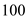
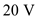
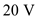
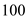
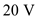
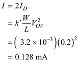
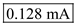
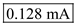

Refer to Figure 8.32 (a) in the text book.
Write the expression of  .
.
Substitute for  and for
and for  .
.
Substitute  for  and  for .
and  for .
Refer to Figure 8.32 (a) in the text book.
Write the expression of .
Substitute for and for .
Substitute  for and  for .
Find I.

Thus, the bias current  for which the gain is .
for which the gain is .